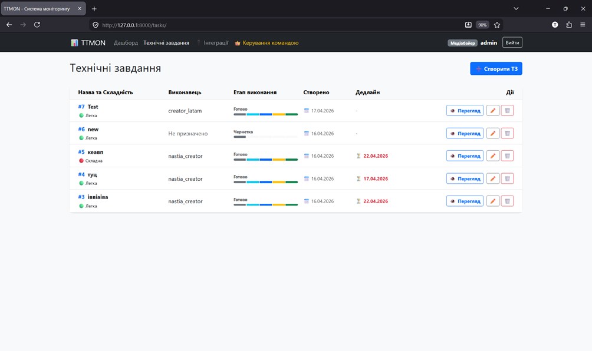
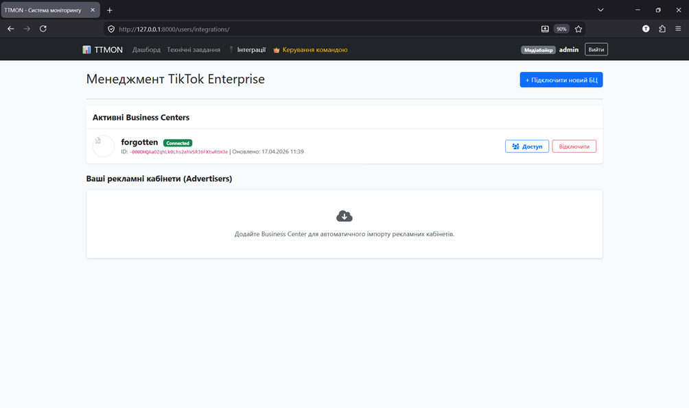
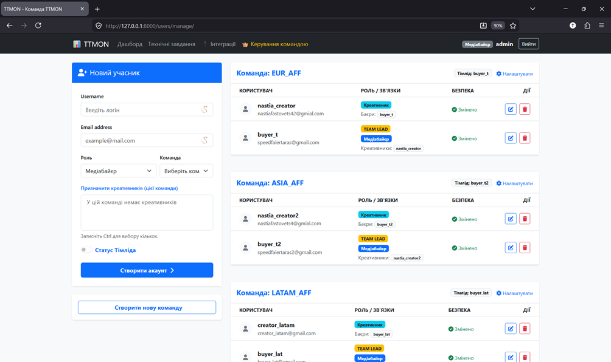

The professional internal system for real-time monitoring, ROI tracking, and creative workflow automation.
Sign In to Workspace Explore PlatformDirect sync with TikTok Marketing API to fetch Spend, ROI, and Conversions. No more manual CSV exports.
A seamless bridge between Buyers and Creators. Manage tasks, scripts, and video assets in one secure place.
Automated alerts when your creative performance drops. Save budget by detecting "Ad Fatigue" instantly.
Explore our comprehensive tools for media buyers and creative teams.

Track creative production from draft to completion.

Securely connect and manage Business Centers via OAuth 2.0.

Granular access control for Admins, Buyers, and Creators.
TTMON uses the TikTok Marketing API to access advertising performance data (spend, ROI, and conversion metrics). This access is granted only through explicit user authorization via OAuth 2.0.
The retrieved data is used exclusively to provide internal analytical dashboards for media buying teams. We use it to monitor creative performance and automate the production pipeline.
We do not share your data with third parties. All API tokens and sensitive information are encrypted and used strictly within your private organization workspace.
Users can disconnect their TikTok Business Centers at any time through the "Integrations" page, which immediately revokes all access permissions directly from our system.